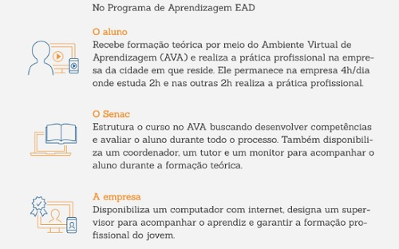

<!-- Utilizado para definir que este documento segue as regras de sintaxe do HTML 5 -->
<!DOCTYPE html>

<!DOCTYPE html>
<html lang="pt-br">

<head>
	<meta charset="UTF-8">
	<meta name="viewport" content="width=device-width, initial-scale=1.0">
	<title>Programa Aprendizagem</title>
</head>


</html>

<link rel="stylesheet" href="style.css">
<html lang="pt-br">

<body>
	<!-- Conteúdo que vai ser colocado na página-->
	<h2 id="s1" align="center">
		<a href="../index.html">Página Inicial</a>
		<hr>
		<h1 id="p1" align="center">Programa RS Tecnologia da Informação</h1>
		<hr>
		<p>
			
		<h2 id="p1" align="center">&bull;Sobre o Programa</h2>
		O Programa de Aprendizagem EAD atende ao disposto na Lei 10.097/2000, ao Decreto 11.479/2023 e à Portaria/MTP
		671/2021, que possibilita a oferta de cursos com foco no desenvolvimento de competências da Economia 4.0.
		<br>
		A Lei da Aprendizagem estabelece que as empresas que tenham pelo menos sete empregados são obrigadas a contratar
		aprendizes. A quantidade varia de 5% a 15%, conforme o número de empregados cujas funções demandem formação
		profissional.
		<br>
		O Senac – Serviço Nacional de Aprendizagem Comercial atende ao Programa de Aprendizagem desde 1946, data de sua
		fundação, às empresas do comércio de bens, serviços e turismo. A partir de 2013, passou a atender esse Programa
		na modalidade EAD, contribuindo assim, com as empresas que estão localizadas distantes de uma unidade Senac.
		<br>
		<b>Jovem com interesse no Programa de Aprendizagem EAD:</b>registre seu interesse nas empresas de sua cidade,
		Agências
		do Trabalhador, ou procure o Senac mais perto de você.
		<br>
		<b>Empresa: </b>conheça mais sobre o Programa de Aprendizagem EAD. Primeiro, assista ao vídeo. Depois, clique,
		abaixo,
		no curso de seu interesse.
		<br>
		<br>
		<hr>
		
		<h2 id="p1" align="center">&bull;A quem se destina o Programa de Aprendizagem EAD?</h2>
		O Programa de Aprendizagem EAD é destinado às empresas localizadas dis- tantes das instituições formadoras e
		atende adolescentes e jovens de 14 a 24 anos incompletos, que estejam frequentando a escola, e pessoas com
		deficiên- cia sem limite de idade.
		<br>
		<br>
		<br>
		<br>
		<br>
		<br>
		<hr>
		<h2 id="p1" align="center">&bull;Como é o Programa de Aprendizagem EAD?</h2>
		<br>
		
		<hr>

		</p>
</body>

</html>